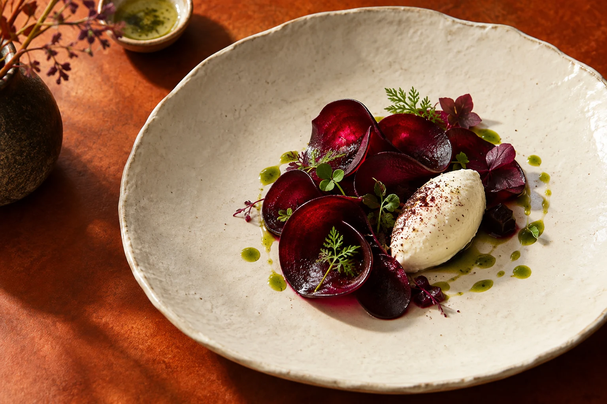

Ein Abend im kleinen Kreis
Für Geburtstage, Wiedersehen oder einfach einen guten Anlass.
- Individuell abgestimmtes Drei-Gang-Menü
- Einkauf und Zubereitung vor Ort
- Anrichten und Aufräumen der Küche

Rote Bete bringt Erde und Süße auf den Teller. Ihre Farbe darf die Hauptrolle spielen.
Sie laden ein. Ich kümmere mich um das Menü. Von der gemeinsamen Planung bis zum letzten Gang bekommt Ihr Abend einen klaren Ablauf – und Sie Zeit für Ihre Gäste.
Für Geburtstage, Wiedersehen oder einfach einen guten Anlass.
Für Gespräche außerhalb des Arbeitsalltags.
Für einen Anlass mit einer eigenen Geschichte.
Fiktives Leistungsangebot innerhalb dieses Website-Konzepts.
Ich koche für den Moment, in dem Menschen zusammenkommen. Ein Menü gibt dem Abend Richtung – und lässt genug Raum für Gespräche, kleine Pausen und einen zweiten Blick.
Eine nutzbare Küche, Geschirr und Platz für Ihre Gäste. Ausstattung, Anfahrt und zusätzlicher Service würden vor der Buchung gemeinsam geklärt.
Das Menü wird passend zur Runde geplant. Vegetarische Wünsche und Unverträglichkeiten würden vorab abgefragt und bei der konkreten Zusammenstellung berücksichtigt.
Anlass und Gästezahl sind der erste Schritt. Für ein echtes Angebot würden wir danach Wunschdatum, Ort, Küche und besondere Ernährungswünsche besprechen.
Diese Demo speichert und versendet nichts. Sie benötigen keine persönlichen Daten.
Dieses Beispiel zeigt eine Möglichkeit. Ihren Auftritt gestalten wir aus dem, was Ihr Unternehmen unverwechselbar macht.